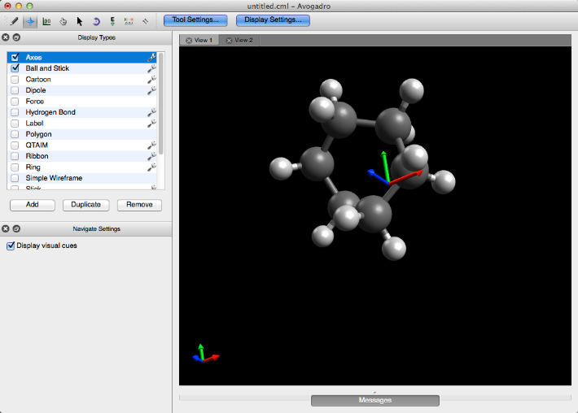
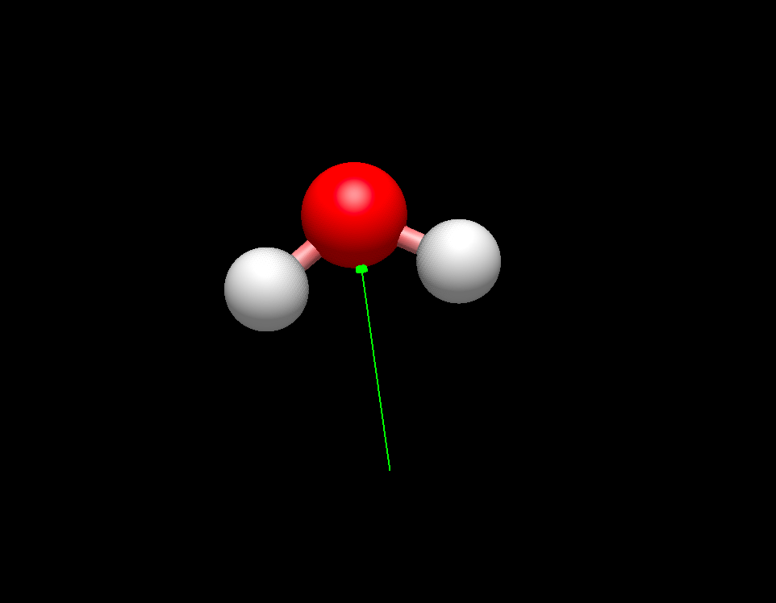
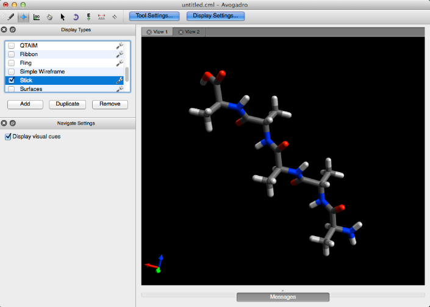
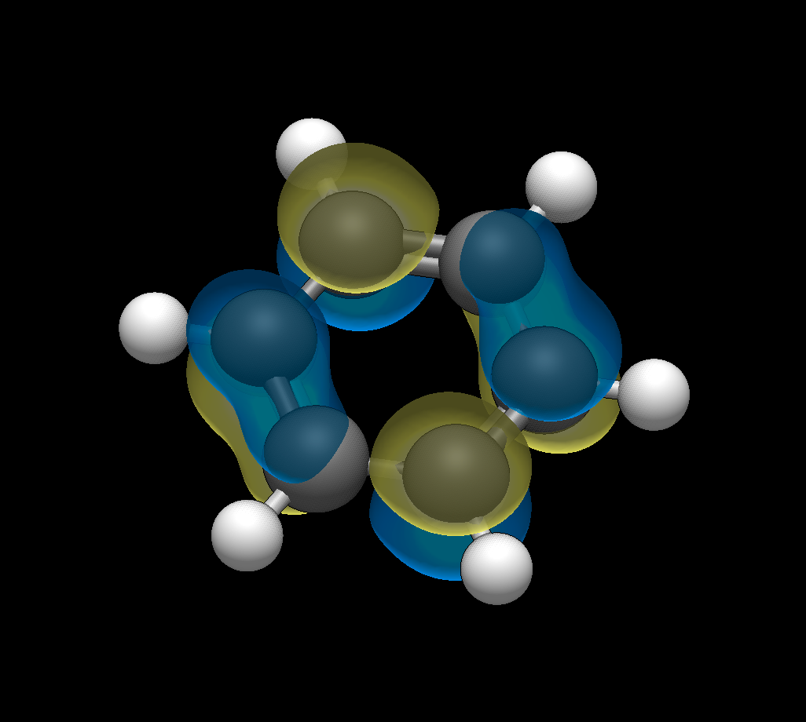

Different Display Styles#
Avogadro comes equipped with various display types to aid in molecular interpretation.
Locating Display Types#
The different display types can be accessed by clicking “Display Settings…” in the top middle of the open Avogadro window. The display types toolbar will be added above the “Tool Settings…” toolbar that is currently opened. All of the plugins featured below can be used in conjunction with one another.

Clicking on the wrench located on the right of some display types will allow various adjustments to be made to the display. For example, you can choose to edit the opacity of the Van der Waals Spheres feature so that you can still view the ball and stick model underneath.

Axes#
Clicking on the Axes plugin will provide the cartesian axes of the molecule from the origin. Note that the red, green, and blue arrows represent the x, y, and z axes respectively.

Ball and Stick#
Ball and Stick is the default plugin when Avogadro is opened. This plugin provides the standard ball and stick representation of a molecule.

Cartoon#
The cartoon feature only applies to secondary biological structures (α helix and β sheet). Below is the cartoon for hemoglobin.

Dipole#
The Dipole plugin will display an overall net dipole if one is present.

Force#
The Force plugin displays green arrows on atoms (as shown below), to qualitatively demonstrate the forces being applied to the atoms.

Hydrogen Bond#
The Hydrogen Bond plugin demonstrates implicit hydrogen bonding that can occur between atoms.

Label#
The label plugin numbers and labels all atoms present in a molecule.

Polygon#
The Polygon feature takes metallic centers with three or more atoms bonded to them, and draws a polygon around them.

QTAIM (Quantum Theory of Atoms in Molecules)#
QTAIM displays the implicit bonding that is theorized to take place between the hydrogens of organic crystals (the implicit bonding is conveyed through dots). This display type is utilized by importing a .wfn file from the “QTAIM”, “Molecular Graph” selection under the “Extensions” menu. More information can be found on this process in the Tutorial section of this manual.

Ribbon#
Similar to the Cartoon plugin, the Ribbon plugin conveys secondary biological structures as a simple ribbon rendering.

Ring#
This feature distinguishes rings with different colors dependent on their size. As shown below a six-membered ring is purple, and five membered ring is blue, etc.

Stick#
Stick is another molecular visual display type, that renders a stick representation of a molecule.

Surfaces#
Once a surface has been created (Extensions Menu -> Create Surfaces…), the Surface display type can be used. This display type allows adjustments to the orbital, opacity, rendering, style, and color.

Van der Waals Spheres#
The Van der Waals plugin provides the classic sphere rendered Van der Waals image.

Wireframe#
Unlike Simple Wireframe, Wireframe draws atoms and bond order into the molecule.